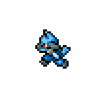

WORKFLOW / SCHEMATIC
01 Pull request02 Diffs + history03 Structured summary
AI / Developer tooling
MCP PR Agent
Turning GitHub diffs and commit history into structured, LLM-assisted pull request summaries.
Explore the codeKaran Manhas / Senior Software Engineer
I build practical software at the intersection of AI, security, and data engineering. From the first experiment to reliable systems.

Curiosity-driven. Systems-minded.01 / Selected work
Three projects across intelligent tooling, cryptography, and connected devices.
AI / Developer tooling
Turning GitHub diffs and commit history into structured, LLM-assisted pull request summaries.
Explore the codeMSc research / Cryptography
My MSc research compared ML-KEM/Kyber with ECDH in distributed environments. CryptoMetrics benchmarked execution time, memory, and system performance; CryptoGrubbs applied Grubbs’ test to identify outliers.
CryptoMetrics code CryptoGrubbs codeEmbedded / Observability
Making device health visible with lightweight HTTP endpoints and a local diagnostics dashboard.
Explore the code02 / Approach
Hi, I’m Karan a Senior Software Engineer focused on AI systems, cybersecurity, data engineering, and systems-oriented software development.
I build practical engineering systems that combine reliable software, measurable performance, and clear technical decision-making. My work spans AI tooling, data pipelines, distributed infrastructure, observability, and cryptographic benchmarking.
I am particularly interested in building production-oriented systems where correctness, security, performance, and operational reliability matter.
03 / Project archive
I = I0 exp(−σnL)
Read the research overview04 / Toolkit